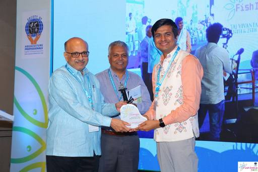

Achievements and recognition
Awards and recognition received by our founder and the company since 2019, from national awards and institutional honours to start-up grants and incubation.
Highlights
Selected recognition
Select any award to view the full photograph.
Awards register
Year by year, 2019 to 2025
Titles, years and organisers as listed in the ADS awards record and the 2025 annual report. Where the record does not state a year, the entry is grouped at the end.
2025
2 entries2024
10 entries2023
2 entries2022
8 entries2021
7 entries2020
3 entries2019
2 entriesYear to be confirmed
8 entriesIn the news
Coverage of our work
Newspaper, television and start-up media coverage of ADS and the Matsya Sathi app.